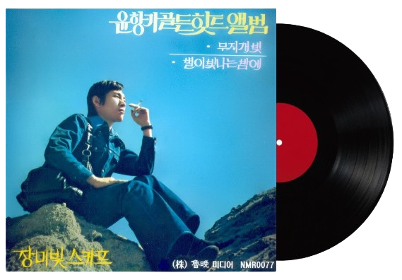

나는행복합니다
나는행복합니다
나는 행복합니다
정말 정말 행복합니다
기다리던 오늘 그 날이 왔어요
즐거운 날이에요
움츠렸던 어깨 답답한 가슴을
활짝펴봐요
가벼운 차림 다정한 벗들과
즐거운 마음으로
들과 산을 뛰며 노래를 불러요
우리 모두 다 함께
나는 행복합니다
나는 행복 합니다
나는 행복합니다
정말 정말 행복합니다
진달래꽃 피는 봄이 지나면
여름이 돌아와요
쏟아지는 태양 젊음이 있는곳
우리들의 여름이지요
강에도 산에도 넓은 바다에도
우리들의꿈이 있어요
그 곳으로 가요 노래를 부르며
우리 모두 다 함께
나는 행복합니다
나는 행복합니다
나는 행복합니다
정말 정말 행복 합니다
나는 행복합니다
나는 행복합니다
나는 행복합니다
나는 행복합니다
정말 정말 행복 합니다
나는 행복합니다
나는 행복합니다
나는 행복합니다
정말 정말 행복 합니다
나는 행복합니다. - 윤향기
×